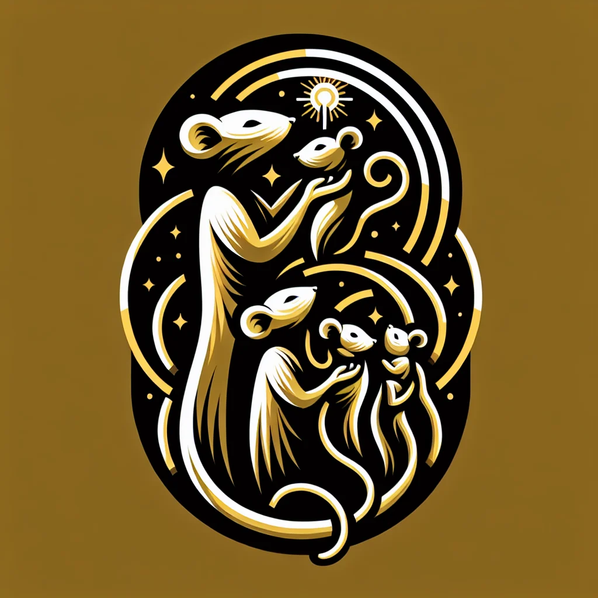

{kind=link}
{kind=link}
Every day in Ratopolis, a unique cadre of peacekeepers works tirelessly behind the scenes to maintain societal harmony—rat mediators. These dedicated individuals resolve conflicts in communities, workplaces, and families, ensuring disputes are settled amicably before they escalate.
The history of mediation in Ratopolis dates back several generations. It began with a few pioneering rats who understood that peaceful negotiation could prevent chaos. Today, rat mediators are indispensable, holding the fabric of rat society together with their expertise in conflict resolution.
Rat mediators employ a variety of techniques to fulfill their crucial role. Central to their practice are active listening and empathy. They create environments where all parties feel heard and respected. "It's about understanding each rat's perspective," explains Squeaky McCheese, a seasoned mediator. "When both sides feel acknowledged, they are more willing to compromise."
Remaining neutral and impartial is another cornerstone of effective mediation. Mediators do not take sides but rather facilitate constructive dialogue. Structured sessions guide disputing parties through a process designed to de-escalate tension and foster mutual understanding. "Our goal is always to find a solution that both parties can accept," says Whiskerina Tailbright, another prominent mediator in Ratopolis.
Mediation plays a pivotal role in preventing conflicts from ballooning into larger disputes. It promotes understanding and cooperation among rats, enhancing community cohesion and workplace productivity. "Thanks to the mediators, our family squeaked through a tough time without any lasting damage," shares Mrs. Whiskers, a local resident who benefitted from mediation.
Consider the case of a family dispute over territory boundaries. Instead of resorting to aggressive confrontations, the family engaged a mediator who facilitated discussions and helped them reach a fair agreement. Similarly, in a cheese factory, tensions between workers and management were diffused through mediation, leading to improved morale and productivity.
Ratopolis residents recognize the value of these unsung heroes. "Mediation helped us find common ground and avoid a gnawing problem at work," said Mr. Cheddar, a cheese factory supervisor. "The mediators are the unsung heroes of Ratopolis, keeping our community united," echoes Mayor Ratcliffe.
Becoming a certified mediator in Ratopolis requires rigorous training. Prospective mediators undergo extensive education in conflict resolution techniques, emotional intelligence, and legal aspects of mediation. Continuous education is essential, ensuring mediators remain adept at handling the evolving nature of disputes.
However, the mediation process is not without challenges. Sometimes, parties are resistant to compromise or view mediation as a sign of weakness. Mediators must employ patience and persistence, helping rats understand that finding common ground benefits everyone. "The hardest part is often getting both sides to the table," says Tailbright. "But once they are there, breakthroughs happen."
Looking ahead, the future of mediation in Ratopolis appears bright. Innovations in conflict resolution and increasing community support promise to expand mediation services. "We hope to launch more workshops, spreading the art of peaceful negotiation," McCheese reveals.
Despite the apparent success, some argue mediation could sometimes be overly time-consuming or that certain conflicts require more stringent legal interventions. Critics suggest a balanced approach where mediation complements other conflict resolution strategies might be more effective in specific scenarios.
In summary, rat mediators play a crucial role in maintaining societal harmony in Ratopolis. They prevent conflicts from escalating, promote understanding, and enhance both community and workplace environments. "We should all support and utilize mediation services," urges Mrs. Whiskers. "Consider becoming a mediator to contribute to a peaceful Ratopolis."
The need for peace in Ratopolis has never been more pressing. Let's cultivate a community where empathy and understanding are the norms. Attend community workshops, support our mediators, and perhaps, take up the mantle of mediation yourself. This isn't just about resolving disputes; it's about building a better, more harmonious Ratopolis for all.
Looking for more in-depth news and exclusive content? Follow RAT TV for real-time updates, behind-the-scenes insights and the latest breaking news.
The Art of Conflict Resolution: Rat Mediators in Action
In Ratopolis, rat mediators play a vital role in resolving conflicts and maintaining societal harmony. Through techniques like active listening and neutrality, they help prevent disputes from escalating, fostering understanding and cooperation within the community.
3 minute read •
Comments

Comments